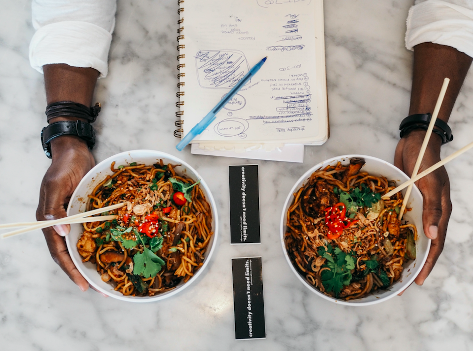
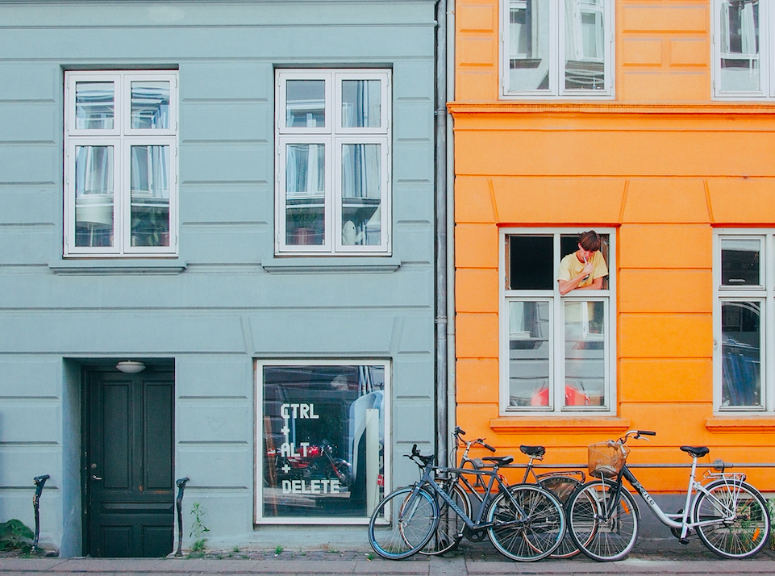
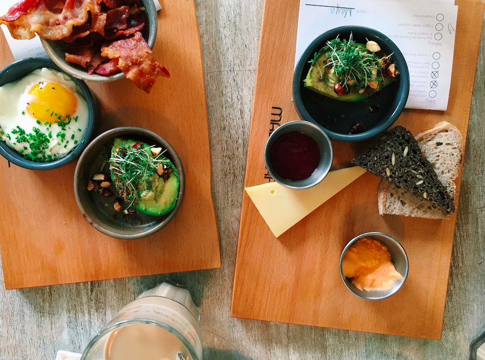
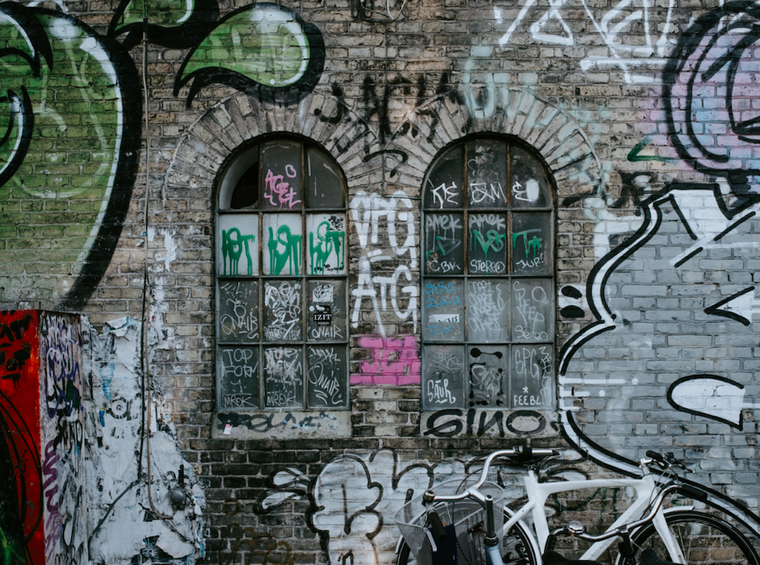

A WEEKEND IN COPENHAGEN
DENMARK | BY MAYA RAO | MAY 2018
My weekend in Copenhagen was absolutely amazing. I met up with one of my friends, whom I hadn't seen in almost a year, since she lives in Edinburgh
and I live in London. We spent two days eating fantastic food (honestly, Copenhagen is a lot more veggie-friendly than I would have thought!)
and exploring one of the most beautiful cities I've ever had the chance to spend time in. It was freezing the whole time we were there, but I
was having so much fun that I almost (almost) didn't feel the cold. If you're looking for a fun, quick weekend trip from Europe, I would
definitely recommend Copenhagen!
DAY 1 /
Landed in Copenhagen, ate dinner and fell asleep.
7 PM /
Landed in Copenhagen for a weekend trip with my friend after a quick 2-hour flight from London. I was working all day today, so I'm already super tired.
8 PM /
Met up with my friend at the AirBnB! She's gluten free and I'm vegetarian, so we spend some time looking for restaurants we can both go to. We pick a Thai place!
9 PM /
We're back after walking 20 minutes in the freezing cold to get our food! We scarf down both our meals (we were starving) and then immediately throw ourselves in bed, so that we can wake up bright and early tomorrow.

DINNER /
Photo by The Creative Exchange on Unsplash
DAY 2 /
Spent a beautiful (and cold) day walking around the city
8 AM /
Woke up early to get ready for the day! Made ourselves coffee in our cute AirBnB, fed our AirBnB cat, and we're on our way out. We really wanted to check out this one brunch place called Mad & Kaffe — we've seen amazing reviews for it and it's gluten-free and veggie-friendly!
10 AM /
We're finally ordering! I can't believe it took us this long and that we spent so much time waiting for our food, but all the options look amazing. We both opt for a make-your-own brunch plate, and the food ends up being sooooo good. Not sure if it's worth an almost two-hour wait, but we leave happy and with full bellies.
1 PM /
We've been spending this whole time just walking around the city and absolutely loving it! Copenhagen is so beautiful and colorful, and super, super clean. All the people are so nice and friendly. We spend ages just walking and taking in all the sights, from Nyhavn Canal to the royal palace. It's so cold outside but I almost don't even care!
3 PM /
We both start feeling a little hungry and pop by a pastry shop specializing in Danish desserts. Since my friend is gluten free, she gets this massive marshmallow covered in chocolate. I get a chocolate cardamom bun and oh my god it is literally the best thing I have ever eaten. Planning to take 30 of these back home with me to London.
7 PM /
With our feet aching, we start the two-mile walk back to our AirBnB. Forget what I said earlier, it's so cold outside, both of us are absolutely freezing. Unfortunately, Danish public transport won't take our credit cards and we've run out of coins, but walking back is a nice way to see the city! We stop by a kebab shop and pick up some food — a rice bowl for my friend and a falafel sandwich for me.
10 PM /
After chatting, looking through our photos and calling our family, we decided to turn in for the night. We checked our phones, and it turns out we walked 15 miles today! My whole body is definitely going to hurt tomorrow but I still think it was worth it.

STREETS OF COPENHAGEN /
Photo by Carlo Villarica on Unsplash
DAY 3 /
Tried smørrebrød, explored Christiania and flew out!
10 AM /
We woke up kind of late this morning. Our AirBnB cat wouldn't stop staring at us in the middle of the night and it was...unnerving to say the least. Still, we have a good chunk of the day before we have to fly back (me to London, her to Edinburgh), so we're going to try to make the best of the day! We eat a couple quick bites at our AirBnB and head out.
12 PM /
We weren't sure if we wanted to do a proper lunch, but we find this quinoa-based New Danish place, where we can both try smørrebrød, a Danish open-faced sandwich. I had my doubts, but it ends up being really good! Definitely a pleasant surprise.
3 PM /
After exploring Christiania (a neighborhood my friend's friend, who used to live in Copenhagen, told us was "dangerous" — it definitely was not), we stop by another pastry shop for some snacks. A gluten-free slice of cake for my friend and another cardamom chocolate bun for me. Yum!
5 PM /
It's time to head to the airport! After checking out from the AirBnB, we sneak onto the Danish metro to get to the airport, since we couldn't find any cabs available to take us to the airport. Hoping we don't get caught, but planning on donating the fare amount to a Danish charity organization when I get back to London.
7 PM /
We say our goodbyes at the airport. I hadn't seen my friend for a while and I'm not sure when I'll see her again (we're both super busy and this was the one weekend our schedules lined up), so it's a bit of a bittersweet moment. We're sad to leave each other and Copenhagen, but definitely not that devil cat!
10 PM /
Finally get back to my apartment in London. I loved our weekend trip but I'm exhausted. Definitely not looking forward to going into work tomorrow morning!

MAD & KAFFE BRUNCH /
Delicious and filling, but was it worth a two-hour wait? Jury's still out

GRAFFITI WALL IN CHRISTIANIA /
Photo by Annie Spratt on Unsplash